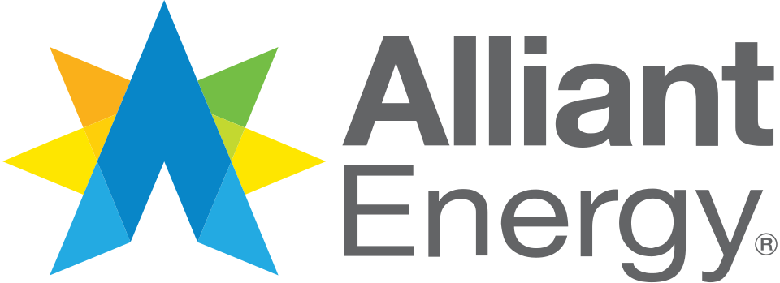

Alliant Energy
Alliant Energy는 미국 매디슨에 본사를 둔 공공 유틸리티 지주회사로, 산하 유틸리티를 통해 아이오와와 위스콘신에 전력과 천연가스 관련 서비스를 제공한다.
최종 업데이트

Alliant Energy는 어떤 브랜드인가
회사는 아이오와와 위스콘신을 중심으로 전력 및 천연가스 사업을 운영한다. 산하 IPL은 아이오와에서 전기를 생산·배전하고 천연가스를 유통·수송하며, WPL은 위스콘신 남부와 중부에서 유사한 서비스를 담당한다.
비규제 사업으로는 지상 운송과 풍력·지열을 포함한 에너지 엔지니어링을 제공한다. 물류 자회사 Travero, Inc는 중개, 트럭 운송, 철도, 환적, 창고 서비스를 수행한다.
회사는 여러 지역의 유틸리티 설비와 영업 구역을 매각하며 사업 범위를 조정했다. 현재 핵심 공공 유틸리티 사업은 아이오와와 위스콘신에 집중한다.
Alliant Energy는 어떻게 시작되고 성장했나
회사는 1981년 설립되었다. 사업 계보의 한 축인 IES Utilities는 1925년 Iowa Railway and Light Corporation으로 아이오와에서 법인화했으며, 이후 Iowa Electric Light and Power Company로 불렸다.
또 다른 축인 IPC는 1920년대 후반 여러 지역으로 확장했으나 1940년대에는 미네소타 남부와 아이오와 북부의 주력 구역에서 떨어진 사업을 매각했다. IES와 IPC는 1990년대 중반 합병해 IPL을 형성했다.
위스콘신 사업은 현지 소유권법을 준수하기 위해 Wisconsin Power and Light로 이전했으며 회사의 사업에 계속 포함한다.
Alliant Energy의 브랜드 아이덴티티는 무엇인가
아이오와와 위스콘신의 규제 유틸리티 사업을 중심으로 전력·천연가스와 물류 및 에너지 엔지니어링 서비스를 함께 운영한다.
Alliant Energy의 대표 제품과 서비스는 무엇인가
IPL은 아이오와에서 전기를 생산하고 배전하며 천연가스를 유통하고 수송한다. WPL은 위스콘신 남부와 중부에서 IPL과 유사한 전력 및 천연가스 서비스를 제공한다.
Travero, Inc는 중개, 트럭 운송, 철도, 환적, 창고를 포함하는 물류 서비스를 제공한다. 비규제 서비스에는 지상 운송과 풍력 및 지열 에너지 관련 엔지니어링이 포함된다.
2016년에는 가정용 전기차 충전소 구매 고객에게 $500 환급을 제공하고 매디슨 사무소에서 무료 공공 충전을 운영했다.
Alliant Energy는 지금 어떤 상태인가
회사는 매디슨에 본사를 두고 IPL, WPL, Travero, Inc 등을 산하에 둔 공공 유틸리티 지주회사이다. 2015년 미네소타 사업 구역을 해당 주에서 운영하는 12개 전기 협동조합의 컨소시엄에 매각했다.
현재 IPL은 아이오와를, WPL은 위스콘신 남부와 중부를 주요 사업 구역으로 담당한다.
Alliant Energy 로고는 어떻게 변해왔나
자주 묻는 질문
Alliant Energy는 어느 나라 브랜드인가요?
Alliant Energy는 미국의 에너지·산업재 브랜드입니다.
Alliant Energy는 언제 설립되었나요?
Alliant Energy는 1981년 설립되었습니다.
Alliant Energy의 브랜드 아이덴티티는 무엇인가요?
아이오와와 위스콘신의 규제 유틸리티 사업을 중심으로 전력·천연가스와 물류 및 에너지 엔지니어링 서비스를 함께 운영한다.
Alliant Energy의 대표 제품은 무엇인가요?
IPL은 아이오와에서 전기를 생산하고 배전하며 천연가스를 유통하고 수송한다.
Alliant Energy는 어느 기업이 소유하고 있나요?
회사는 매디슨에 본사를 두고 IPL, WPL, Travero, Inc 등을 산하에 둔 공공 유틸리티 지주회사이다.
Alliant Energy의 본사는 어디에 있나요?
Alliant Energy의 본사는 매디슨에 있습니다(위키데이터 기준).
Alliant Energy의 공식 웹사이트는 어디인가요?
Alliant Energy의 공식 웹사이트는 https://www.alliantenergy.com/ 입니다.
출처와 검증
Alliant Energy 관련 참고: 공식 웹사이트 · 위키데이터 Q4732492 · 영어 위키백과. 브랜드명은 한글과 원어를 함께 표기하되 데이터에 없는 표기는 만들지 않습니다. 기원 국가·설립연도는 검수된 정의문에서 확인된 값을 우선하고, 없을 때만 공식 웹사이트 URL이 일치하는 위키데이터 개체의 값을 씁니다. 위키데이터 값은 2026-09-12 기준입니다.